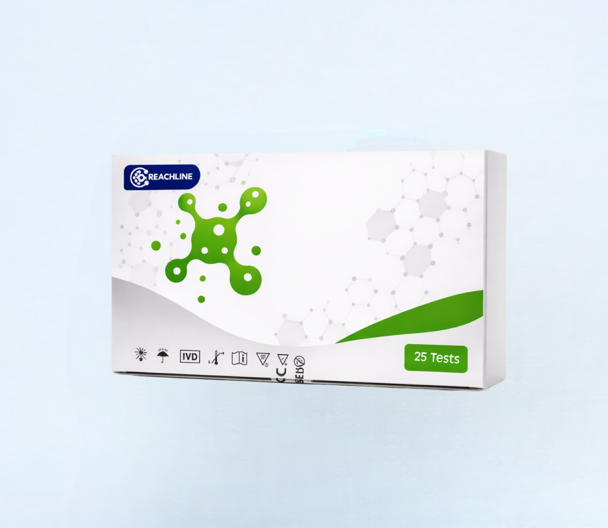
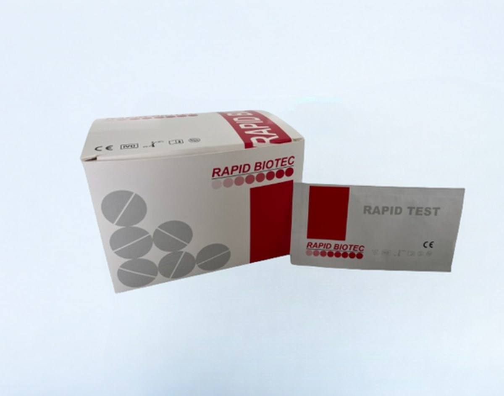

Test Rápidos
Sangre Oculta en Heces (FOB)
Inmunoensayo cualitativo para sangre oculta en heces.
Ver más
Combo Rapid Biotec: inmunoensayo cromatográfico de un solo paso para la detección cualitativa simultánea de Norovirus, Rotavirus, Adenovirus, Astrovirus y Enterovirus en heces humanas, como ayuda diagnóstica de gastroenteritis viral.
Disponibilidad sujeta a stock. Incluye tubos de recolección con tampón de extracción, goteros y controles positivo/negativo. Panel de referencia de control de calidad (P1/P2) disponible para Adenovirus y Rotavirus.
El Combo Rapid Biotec Norovirus+Rotavirus/Adenovirus+Astrovirus+Enterovirus (REF D-NRAAED10) combina 4 inmunoensayos cromatográficos de flujo lateral en un solo cassette: Norovirus (genogrupos 1 y 2), Rotavirus/Adenovirus, Astrovirus y Enterovirus, todos causantes frecuentes de gastroenteritis aguda infantil y en adultos.
Rotavirus es el agente más común de gastroenteritis aguda en niños pequeños; los adenovirus entéricos (Ad40/Ad41) son la segunda causa más frecuente. Norovirus es altamente contagioso (un inóculo de solo 10 partículas puede causar infección) y responsable de brotes explosivos en instituciones.
Recomendado para su uso en los siguientes entornos:
| Analitos | Norovirus (GI/GII), Rotavirus, Adenovirus, Astrovirus, Enterovirus |
|---|---|
| Metodología | Inmunocromatografía de flujo lateral, 4 tiras combinadas en un cassette |
| Tipo de muestra | Heces humanas (sólidas o líquidas) |
| Tiempo de resultado | 15 minutos (no leer después de 20 min) |
| Sensibilidad relativa | Norovirus >99,9% · Rotavirus 97,3% · Adenovirus 95,2% · Astrovirus 97,0% · Enterovirus 98,3% |
| Controles | Positivo y negativo externos incluidos; panel de referencia P1/P2 disponible por separado |
| Certificación | CE, uso IVD |
| Fabricante | Rapid Biotec / distribuido por Rapid Labs Ltd (UK) y VidaQuick Biotech S.L. (España) |